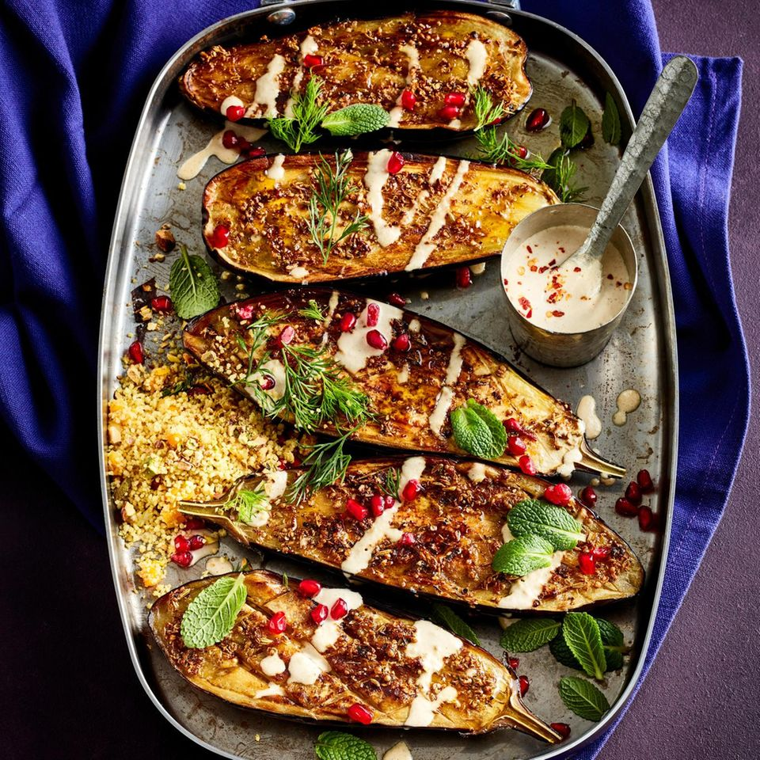

Auberginen mit Tahin-Sauce
retzpt
4 Auberginen (1,2 kg)
Salz
1
El Kreuzkümmelsaat
1
Tl Fenchelsaat
1
Tl Koriandersaat
1
Tl Anissaat
1
Bio-Zitrone
12
El Olivenöl (plus etwas für das Backblech oder den Bräter)
Pfeffer
Zucker
Pistazien-Couscous
50
g Aprikosen (getrocknet)
200
g Couscous
250
ml Gemüsebrühe
½
Tl Curry-Pulver
50
g Pistazienkerne (gesalzen, geschält)
3
El Olivenöl
2
El Zitronensaft
Salz
Pfeffer
Tahin-Sauce und Garnitur
150
g helles Tahin (Sesampaste)
200
g Joghurt (3,5 % Fett)
1
Knoblauchzehe
Salz
2
El Olivenöl
Pfeffer
½
Tl Kreuzkümmel (gemahlen)
1
Tl Zitronensaft
Zucker
4
Stiele Zucker
2
Stiele Dill
4
El Granatapfelkerne
Auberginen waschen, putzen und halbieren. Das Fruchtfleisch auf der Schnittseite rautenförmig einritzen, ohne dabei die Haut einzuschneiden. Schnittseiten mit Salz würzen und 10 Minuten ziehen lassen.
Inzwischen das Gewürzöl zubereiten, dafür Kreuzkümmel-, Fenchel-, Koriander- und Anissaat im Mörser grob zerstoßen. Zitrone heiß waschen, trocken reiben, die Schale fein abreiben. 2 El Saft auspressen. Gewürze, Zitronenschale und -saft mit 4 El Olivenöl mischen und mit Salz, Pfeffer und ½ Tl Zucker würzen.
Auberginen mit Küchenpapier trocken tupfen. Jede Hälfte mit 1 El Olivenöl beträufeln. Auberginen in einer breiten Pfanne bei mittlerer bis starker Hitze ca. 3 Minuten auf der Schnittfläche braten, bis sie leicht gebräunt sind. Auberginen mit der Schnittfläche nach oben auf ein leicht gefettetes Backblech oder in einen Bräter setzen und mit dem vorbereiteten Gewürzöl beträufeln. Im vorgeheizten Backofen bei 230 Grad (Gas 4–5, Umluft 210 Grad) auf der 2. Schiene von unten ca. 25 Minuten backen, bis die Auberginen goldbraun und weich sind.
Inzwischen für den Pistazien-Couscous Aprikosen in feine Würfel schneiden und mit dem Couscous in eine Schüssel geben. Gemüsebrühe mit dem Currypulver in einem Topf aufkochen und mit dem Schneebesen in den Couscous einrühren. Couscous zugedeckt 10 Minuten quellen lassen.
Für die Tahin-Sauce Sesampaste mit dem Joghurt verrühren. Knoblauch grob hacken und mit 1 Prise Salz mit einer breiten Messerklinge fein zerreiben. Knoblauch, 50 ml Wasser und Olivenöl unter die Paste rühren. Mit Salz, Pfeffer, Kreuzkümmel, Zitronensaft und 1 Prise Zucker abschmecken.
Für den Pistazien-Couscous Pistazien grob hacken und mit dem Olivenöl und Zitronensaft unter den Couscous heben. Couscous mit Salz und Pfeffer abschmecken.
Auberginenhälften aus dem Ofen nehmen, mit etwas Tahin-Sauce beträufeln. Minzblätter und Dillästchen von den Stielen abzupfen. Auberginen mit Minzblättern, Dillästchen und Granatapfelkernen bestreuen. Mit Couscous servieren. Restliche Tahin-Sauce separat dazu servieren.
